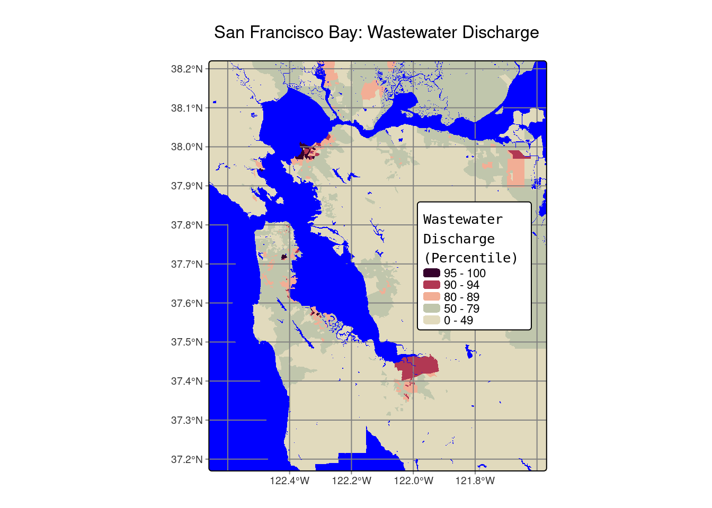
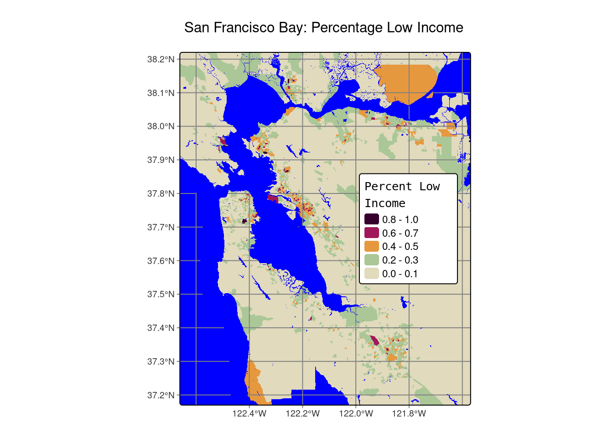

Assessing Wastewater discharge in low income communities:
Peter Vitale
In this project I hope to practice geo-spatial data visualization by:
Creating a clear and visually stimulating plot of the San Francisco Bay
Tying together plots of wastewater discharge and low income communities
I’m going to start by reading in the data and zoom in on the area I am focused on: South San Francisco Bay
# First, I'm going to load the necessary packages using p_loadpacman::p_load('tidyverse', 'sf', 'here', 'tmap')# Read in geodatabase of EJScreen data at the Census Block Group levelejscreen <- sf::st_read(here::here("data", "ejscreen","EJSCREEN_2023_BG_StatePct_with_AS_CNMI_GU_VI.gdb"))
Reading layer `EJSCREEN_StatePctiles_with_AS_CNMI_GU_VI' from data source
`/Users/petervitale/MEDS/EDS-223/eds223-homework1/data/ejscreen/EJSCREEN_2023_BG_StatePct_with_AS_CNMI_GU_VI.gdb'
using driver `OpenFileGDB'
Simple feature collection with 243021 features and 223 fields
Geometry type: MULTIPOLYGON
Dimension: XY
Bounding box: xmin: -19951910 ymin: -1617130 xmax: 16259830 ymax: 11554350
Projected CRS: WGS 84 / Pseudo-Mercator
# Filter to a state you are interested incalifornia <- ejscreen %>% dplyr::filter(ST_ABBREV =="CA") # Filter to San Francisco Bay sf_bay_ej <- ejscreen %>% dplyr::filter(CNTY_NAME %in%c("Santa Clara County", 'Alameda County', 'Contra Costa County' , 'Marin County', 'Napa County', 'San Francisco County' , 'San Mateo County', 'Solano County', 'Sonoma County'))# Drop NA's on the Wastewater column of the sf_bay_ej datasf_bay_ej = sf_bay_ej %>%drop_na('D2_PWDIS')# I don't love this map without the iconic bay, so I am going to add the watersf_bay_water <-st_read(dsn =here('data', 'sf-bay-shape', 'region_water_area.shp'))
Reading layer `region_water_area' from data source
`/Users/petervitale/MEDS/EDS-223/eds223-homework1/data/sf-bay-shape/region_water_area.shp'
using driver `ESRI Shapefile'
Simple feature collection with 3737 features and 4 fields
Geometry type: MULTIPOLYGON
Dimension: XY
Bounding box: xmin: -123.6325 ymin: 37.00103 xmax: -121.2521 ymax: 38.85491
Geodetic CRS: WGS 84
Now I am going to start by plotting the South Bay Wastewater discharge
bbox_main <-st_bbox(c(xmin =-122.64 , xmax =-121.59 , ymax =38.2 , ymin =37.19),crs =4326) # This sets the bounding box and crs which aid in the view of the San Francisco Bay tm_shape(sf_bay_ej, bbox = bbox_main) +# We start with the base: the sf bay tm_crs(4326) +# What view we want of the map tm_polygons(fill ='P_D2_PWDIS',fill.scale =tm_scale(values =c('#E1DABD','#ABC798','#FFC4EB','#E6983F','#A0185A','#35012C'),breaks =c(0,50,80,90,95,100)), # This sets up my wastewater color scale and fills in the percentiles of wastewaterslty ='blank', # Getting rid of the linesfill.legend =tm_legend(title ='Wastewater\nDischarge\n(Percentile)', reverse =TRUE, width =8,height =9,title.fontfamily ='monospace'))+# Legend formattingtm_layout(bg.color ='blue',legend.position =c('right','center'),legend.title.size = .8)+# Background color and legend size + positiontm_graticules()+# This adds gridlinestm_shape(sf_bay_water)+# Lets get our SF bay water data in theretm_polygons(fill ='blue',lty ='blank')+tm_title('San Francisco Bay: Wastewater Discharge') # And cap it off with a title

tm_shape(sf_bay_ej, bbox = bbox_main) +tm_crs(4326) +tm_polygons(fill ='LOWINCPCT', # This time im using percent income instead of wastewaterfill.scale =tm_scale(values =c('#E1DABD','#ABC798','#E6983F','#A0185A','#35012C')),lty ='blank',fill.legend =tm_legend(title ='Percent Low\nIncome', reverse =TRUE,width =8,height =9,title.fontfamily ='monospace'))+tm_layout(bg.color ='blue',legend.position =c('right','center'),legend.title.size = .8)+tm_graticules()+tm_shape(sf_bay_water)+tm_polygons(fill ='blue',lty ='blank')+tm_title('San Francisco Bay: Percentage Low Income')

The San Francisco Bay has 37 wastewater treatment plants which run into the bay. The San Francisco Bay also has an increasingly high level of wealth disparity, with a gap of $126,800 between Silicon Valley’s highest and lowest earners. I decided to compare where the wastewater was being dumped and the percentage of the population that is low income, in an attempt to ascertain if access to green spaces is reduced in low income areas. In the maps you can see some peaks in wastewater in San Jose and San Pablo. While the percentage of low income is not extremely high in these communities, it still peaks where we see wastewater being discharged. The low income plot must also be viewed with the caveat that the data classifies low income as anyone below $52,992 per year. However, the disparity in the San Francisco Bay makes it so some counties people making even $100,000 being considered low income. If the data had included an adjusted low income level, the pattern of those in low income communities having their access to nature reduced would become more apparent.